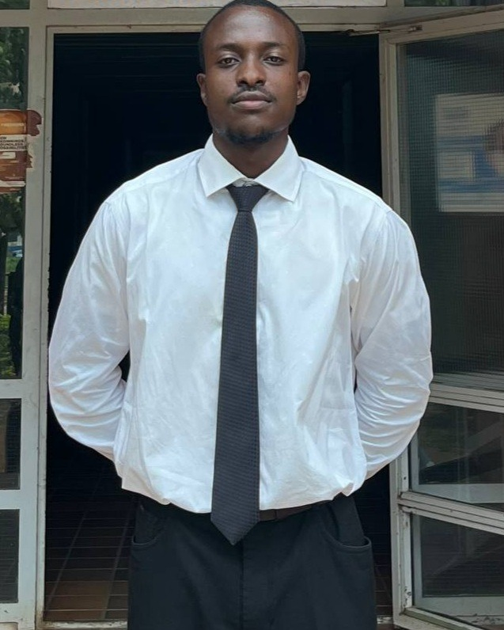

Aerospace Engineering graduate, AFIT Kaduna — CFD, CAD modeling, and aircraft maintenance experience across six platforms.

ANSYS Fluent, the ADMv2 actuator disk method, and k−ω SST turbulence modeling.
CATIA V5 part and assembly modeling for turbofan engines and full airframes.
One-way FSI, ANSYS Mechanical, mass & balance and load-path analysis.
Scheduled inspections and servicing across six fixed- and rotary-wing platforms.
The thesis applies the Actuator Disk Method (ADMv2) to a complete ATR 72-600 wing-fuselage-nacelle-empennage geometry in ANSYS Fluent, coupled by one-way FSI to ANSYS Mechanical, to extract the asymmetric structural loads an OEI event puts through the airframe — at a computational cost that a university engineering department can actually afford.
Remote CAD internship building detailed CATIA V5 models of the GE90 and Eurojet EJ200 turbofan engines from engineering drawings and reference material, then presenting completed assemblies during technical review.
Scheduled 400-hour and 600-hour inspections on Beechcraft King Air 300 aircraft through at least two full maintenance cycles, 200-hour checks on Hughes 369H helicopters, borescope engine inspections, and landing gear, hydraulic and fuel system servicing — across two Nigerian Air Force engineering groups.
A nine-person team project I led, synthesizing the Bombardier Challenger 650 and Gulfstream G280 into a higher-capacity, ultra-long-range business jet — MTOW 27,295 kg, range 7,860 km, 20 occupants. My technical contribution: the mass estimation and center-of-gravity balance analysis behind those numbers.